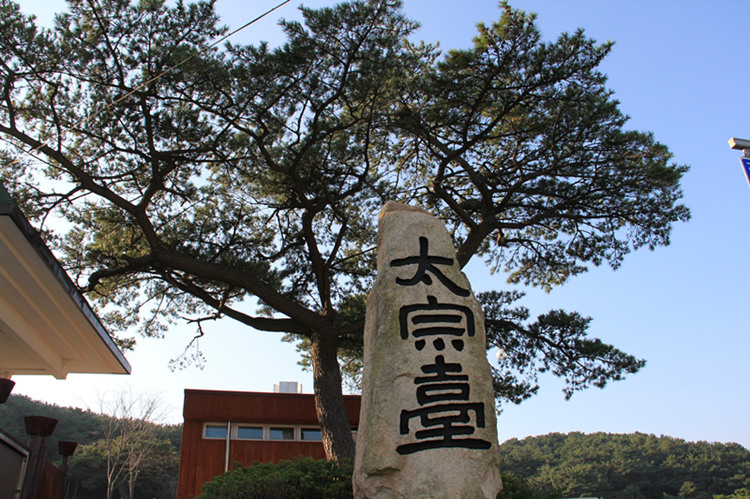

经典两日游
D1：太宗台——龙头山公园（釜山塔）
D2：广安里大桥——海云台海水浴场
提示：釜山塔需要门票，5000韩元，现场购买。
#太宗台#

图：太宗台景点
太宗台位于连接釜山大桥的“影岛”附近的松林、山茶树茂盛，悬崖峭壁连绵不断。据说三国统一后，新罗太宗武列王曾游览于此，因而得名。
地址：釜山影岛区东三2洞山29-1
#龙头山公园（釜山塔）#
龙头山公园位于釜山繁华的市区。龙头山这个名字的由来是由于山峰像一条龙从海里飞向天空的样子。登上龙头山，可俯瞰繁华市区全景和海洋风光。晴天时，甚至可瞭望到远方的对马岛。观赏夕阳和夜景，更具浪漫情调。
地址：釜山中区光复洞2街龙头山路37-55
#广安里大桥#

图：釜山广安里大桥
位于韩国釜山市广安里。2003年1月，广安里大桥开通以后，成为广安里海水浴场的一大景观。广安里大桥全长4.39公里，晚上8点，夜灯开放以后，桥身宛如一条火龙，景色十分壮观。
地址：釜山广安里道路第66号
#海云台海水浴场#
海云台海水浴场是韩国最有名的海洋休养地，沿海岸线建有现代化的配套设施。每年可接待1000多万名国内外游客，主要开放季节为每年的7—8月。
地址：釜山海云台区海云台海边路264
图：釜山南浦洞夜景
经典三日游
D1：水族馆——海东龙宫寺
D2：梵鱼寺——Centum City
D3： BIFF 广场——釜山电影街
提示：游客晚上可以在BIFF广场附近用餐，美食街与流动摊贩都非常多。
#水族馆#
运用最尖端技术建成的主题水族馆 ——釜山海底世界，海云台沙滩侧的釜山水族馆，是一个建于地底的水族馆，楼高3层，楼面面积逾50，000平方米（以韩国测量方式为准），是全韩国最大型的水族馆，鲨鱼馆内的透明隧道，亦是韩国最长的一条。
地址：釜山海云台区中1洞1411-4
#海东龙宫寺#
海东龙宫寺位于釜山东海岸，是韩国唯一一座位于海边的寺庙，周边景色非常优美。龙宫寺由懒翁大师创建于1376年高丽遇王时期，依山傍水的地理位置让寺庙显得清雅却不失别致，内有海水观音、大雄殿、龙王堂、窟法堂、四狮子三层石塔等景观。
地址：釜山机张郡机张邑侍郎里416-3
#梵鱼寺#
图：梵鱼寺
现为韩国著名巨刹，统辖所属寺院三十三所。梵鱼寺最初的建筑在壬辰倭乱（1592-1598）时被毁，现在的建筑是1713年重建的。大雄殿建筑手法细腻而华丽，堪称李朝时期（1392-1910）建筑之顶峰。
地址：釜山金井区梵鱼寺路250 青龙洞
#Centum City#
釜山新世界Centum City百货商店被誉为是世界上最大的百货商店，是经过吉尼斯世界纪录认证过的，也是韩国历史最悠久的高级百货商店。
地址：釜山海云台区佑洞1495
#BIFF 广场#
BIFF广场位于釜山南浦洞的影院街，随着1996年釜山国际电影节（Busan International Film Festival）在这里的举办，这一带影院街面貌焕然一新，继而被命名为BIFF广场。
地址：釜山中区南浦洞
#釜山电影街#
釜山电影街，南浦洞街上剧场密布，国际电影节时，这条电影街便成为人潮汇聚的中心舞台。
地址：釜山中区南浦洞
图：釜山电影街
深度三日游
D1：太宗台——龙头山公园（釜山塔）
D2：甘川文化村——光复时尚街区
D3：水族馆——海云台海水浴场
#太宗台#
太宗台位于连接釜山大桥的“影岛”附近的松林、山茶树茂盛，悬崖峭壁连绵不断。据说三国统一后，新罗太宗武列王曾游览于此，因而得名。
地址：釜山影岛区东三2洞山29-1
#龙头山公园（釜山塔）#
龙头山公园位于釜山繁华的市区。龙头山这个名字的由来是由于山峰像一条龙从海里飞向天空的样子。登上龙头山，可俯瞰繁华市区全景和海洋风光。晴天时，甚至可瞭望到远方的对马岛。观赏夕阳和夜景，更具浪漫情调。
地址：釜山中区光复洞2街龙头山路37-55
#甘川文化村#
图：甘川文化村一景
文化村一路上有观景台和拍摄点路标，山坡上错落有致的五颜六色的房屋。
地址：釜山沙下区甘川洞2-347
#光复时尚街区#
位于釜山中区光复洞的光复路一带，既是釜山文化艺术时尚的中心，又是购物、旅行的好去处。
地址：釜山光复路文化时尚街区
#水族馆#
运用最尖端技术建成的主题水族馆 ——釜山海底世界，海云台沙滩侧的釜山水族馆，是一个建于地底的水族馆，楼高3层，楼面面积逾50，000平方米（以韩国测量方式为准），是全韩国最大型的水族馆，鲨鱼馆内的透明隧道，亦是韩国最长的一条。
地址：釜山海云台区中1洞1411-4
#海云台海水浴场#
海云台海水浴场是韩国最有名的海洋休养地，沿海岸线建有现代化的配套设施。每年可接待1000多万名国内外游客，主要开放季节为每年的7—8月。
地址：釜山海云台区海云台海边路264
图：釜山日落景观
首尔釜山四日游
D1：北村韩屋——三清洞——仁寺洞——乘高铁前往釜山
D2：乘游船游览五六岛及太宗台
D3：南浦洞——札嘎其市场——甘川文化村——光复时尚街区
D4：世峰楼——海云台———釜山电影街
#北村韩屋#
北村韩屋村位于景福宫、昌德宫、宗庙之间，是传统韩屋密集的地方，也是首尔最具代表性的传统居住地，且到处都有很多史迹、文化遗产和民俗资料。因此，被称为城市中心的街道博物馆。
地址：首尔钟路区桂洞街105
#三清洞#
图：三清洞街景
三清洞，位于韩国首尔特别市钟路区的一个行政洞，区内依然保留着不少李氏朝鲜时期兴建的韩屋，据说其风水为首尔最佳，自古已是上流阶级居住的地方。近年咖啡厅与时尚小店林立，逐渐成为当地居民及外地游客约会散心的新场所
地址：首尔钟路区三清洞
#仁寺洞#
仁寺洞以中央大街为中心，四周散布着很多的胡同，多而密集，就像是蜘蛛网一样。在胡同里隐藏着很多仁寺洞的著名场所。
地址：首尔钟路区仁寺洞 130-4
#五六岛#
五六岛位于釜山南区的一端，每天随潮水涨退情况不同会露出五个或六个小岛，系釜山市的受保护自然区。
地址：釜山南区龙湖洞936
#太宗台#
太宗台位于连接釜山大桥的“影岛”附近的松林、山茶树茂盛，悬崖峭壁连绵不断。据说三国统一后，新罗太宗武列王曾游览于此，因而得名。
地址：釜山影岛区东三2洞山29-1
#南浦洞#
南浦洞街上剧场密布，釜山国际电影节时，这条电影街便成为人潮汇聚的中心舞台。
地址：釜山中区南浦洞
#札嘎其市场#
位于南浦洞海边的嘎其市场，是釜山最著名的海鲜市场，超过50年的历史，是一个包含海鲜批发、零售及海鲜食店于一身的大型室内市场。
地址：釜山中区札嘎其海岸路52号 （南浦洞）
#甘川文化村#
文化村一路上有观景台和拍摄点路标，山坡上错落有致的五颜六色的房屋。
地址：釜山沙下区甘川洞2-347
#光复时尚街区#
位于釜山中区光复洞的光复路一带，既是釜山文化艺术时尚的中心，又是购物、旅行的好去处。
地址：釜山光复路文化时尚街区
#世峰楼#
“世峰楼”，会议场所就依山而建。全部用，外观吸纳韩式传统亭子的元素。据介绍，，可抗强台风、地震和海啸，并拥有防弹等高科技安保设施。这里，海岸边松涛阵阵，背倚灯塔，远眺大桥，釜山的过去与现在、传统与现代尽在其中。
地址：釜山海云台南端冬柏岛岸边
#海云台#
海云台，韩国南部釜山市著名旅游胜地。在东南沿海的水营湾内，釜山东北约18公里处。原为突出海中的丘陵，新罗时代末建台，沙丘发达。水清澈，浴场与附近东莞温泉驰名全国。
地址：釜山海云台区中洞
图：海云台景观
#釜山电影街#
釜山电影街，南浦洞街上剧场密布，国际电影节时，这条电影街便成为人潮汇聚的中心舞台。
地址：釜山中区南浦洞